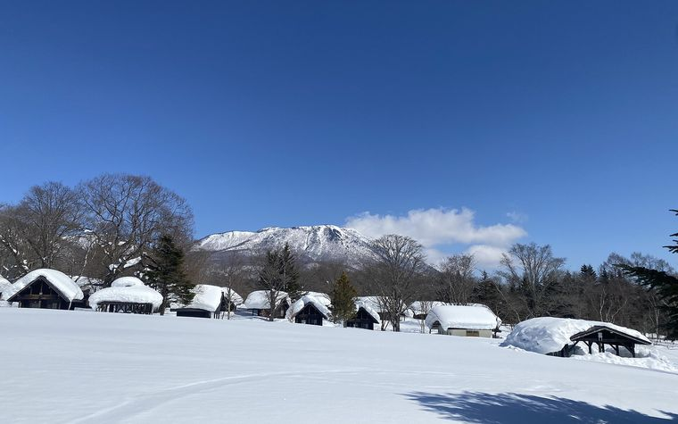
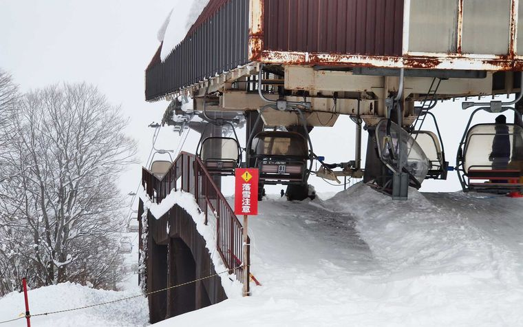
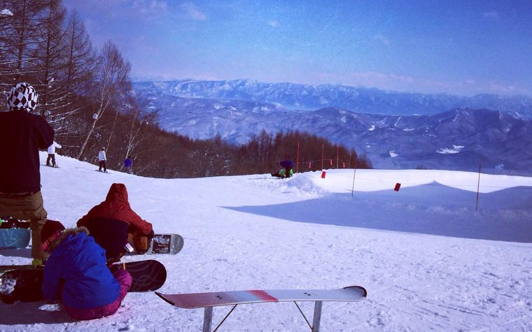
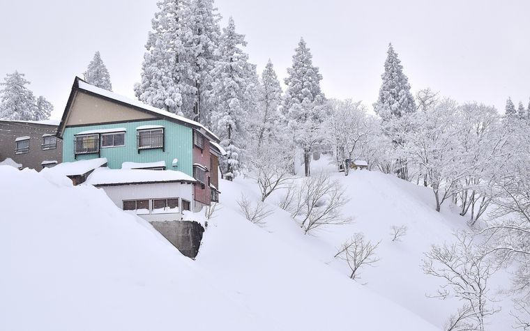
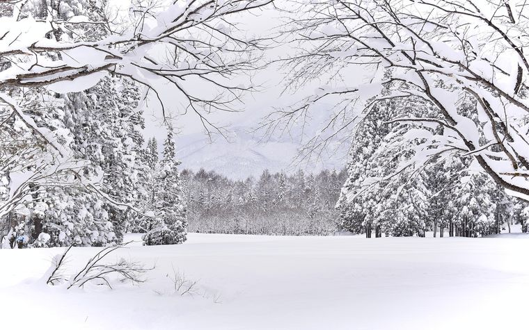

1

Day 1 · 18 Jan 2027（一）
Kurohime Kogen 黑姬高原
落地／裝備日 熱身
平日單日票¥5,500（約 HKD$272）初級佔比45%門到門35–45 分鐘接駁巴士無
為何去
- 45% 初級雪道、最長 2,600m，黒姫ファミリーパーク＆どんぐり広場 有動く歩道（滑行帶），最適合第一日重新起步。
- 全區最便宜：25/26 平日成人單日 ¥5,500（約 HKD$272）（假日 ¥6,200（約 HKD$306））（料金表）。
- 租借齊全：套裝 1 日 ¥5,600（約 HKD$277）、板 135–168cm、靴 22–32cm。
怎樣去
- 酒店接送 8 分鐘 → 妙高高原站
- しなの鉄道北しなの線 8 分鐘 → 黒姫站
- 的士 10 分鐘 → 雪場（官方交通頁）
要注意
三件事：（一）Kurohime 唔在任何妙高票券之內，要獨立買票；（二）雪校只有日文，官網亦無英文版 — 第一日的英文課程唔應該約在這裡。（三）網上租借兩日前 14:00 截止，要記住。
當日目標
試裝備、調 binding 角度、練跣行與單腳滑行、上落纜車。唔求進度，只求熟習。纜車 8:30–16:30（平日至 16:00）。
2

Day 2 · 19 Jan 2027（二）
Ikenotaira / Alpen Blick 池之平溫泉
主場 + 英文課程 約課程
最平緩雪道平均 7°25/26 大人單日¥5,900（約 HKD$291）步行去雪場約 400m26/27 票價調整中
為何去
- 酒店所在的雪場，亦係四個 Mt Myoko 雪場中最平緩的一個。
- ドリームコース 1,100m 平均只 7°（最大 11°）、ハッピーゲレンデ 1,400m 平均 8°（雪場頁）。
- Escape Myoko 官網亦直接寫：初學者建議由 Ikenotaira 開始。
怎樣去
- 由酒店步行至「Front of Ebisuya」約 400m／5 分鐘，至「Land Mark Onsen Cafe」約 400m／7 分鐘
- 冬季亦有妙高高原站直達雪場的每日接駁（12 月中 – 3 月 15 日）（交通頁）
要注意
這一日在 26/27 活動表上係 1 月 19 日，未撞正活動；但翌日 1 月 20 日係池メンDAY，人流會多，必要時可與 Day 3 互換。IC 卡押金 ¥500（約 HKD$25） 可退，纜車 8:30–16:00。
當日目標
把英文半日課程放在這一日上午（目標：連續 S-Turn 與控速）。下午自行在 ドリーム／ハッピー 重複練習同一條線。
3

Day 3 · 20 Jan 2027（三）
Myoko Suginohara / Mitahara 妙高杉之原（含三田原）
長線巡航日 鄰場活動日
最長雪道8,500m垂直落差1,124m25/26 單日票¥8,000（約 HKD$395）接駁單程¥1,100（約 HKD$54）
為何去
- 26/27 季度已公佈：19 Dec 2026 – 28 Mar 2027（予定）（冬季頁）。
- A1 白樺 3,255m（20°／11°）初級長線，加三田原區 D3+D1+B2 又有 ~4km 初級。
- 90 公頃、16 條雪道，人流分散，適合練長距離節奏。
怎樣去
- Mt. Myoko Shuttle「池の平 ライムリゾート」站出發：8:19 / 8:49 / 9:19 / 9:49 / 10:19
- 回程 15:19 / 15:49 / 16:19，單程 ¥1,100（約 HKD$54），上車付現（MKK Tour 26/27）
要注意
落三田原纜車後一定要睇指示牌：同一組纜車亦通往 E2 スーパージャイアント（上級・最大 38°）。如果 1 月 20 日 Ikenotaira 活動日影響安排，這日可與 Day 2 互換。
當日目標
第一次滑 3km 以上連續長線。目標係全程唔停、能控速、能在中途安全停下。小學生及以下免費；App 預售 25/26 為 ¥7,300（約 HKD$361）。
4

Day 4 · 21 Jan 2027（四）
Akakura Onsen 赤倉溫泉
初級面積最大 主力
初級佔比50%雪道數17 條25/26 單日¥7,000（約 HKD$346）共通票 25/26¥8,000（約 HKD$395）官網狀態停機中
為何去
- 四個雪場中初級佔比最高 — 50% 初級、17 條雪道、最長 3,000m、14 條纜車（SnowJapan）。
- 英文雪校最集中：Myoko Snowsports（全英文）與 Yodel 都在這裡。
- 區內唯一每日夜滑（くまどー區至 21:00，¥3,500（約 HKD$173））— 如果體力有餘可以加一節。
怎樣去
- Mt. Myoko Shuttle 往 Akakura：8:38 / 9:08 / 9:38
- 回程 14:23 / 15:08 / 15:38 / 16:08 / 16:38，單程 ¥1,100（約 HKD$54）
- 區內另有 AKAKAN 免費循環巴士 8:00–16:40
要注意
Akakan 加不加？只有雪況與體能都好才加 Akakura Kanko：AKR 官方雪道表顯示它只有一條真正初級線（ホテルビギナーコース 750m／10°），其餘全部中／上級（Hotel Main 15°、Hotel B 17°、Hotel C 20°、女子国体 22°、Champion A 32° 未壓雪）（AKR 雪道與價格）。要兩邊都滑就買共通單日票 ¥8,000（約 HKD$395）（25/26 價）。官網停機期間唔好在 akakura-ski.com 入卡。
當日目標
把下午英文私人課程放這日（¥30,000（約 HKD$1,482） / 最多 4 人）。上午先在初級區熱身，用最大的初級面積鞏固 Day 2 學到的動作。
5

Day 5 · 22 Jan 2027（五）
彈性日 / 重滑最好的一場 彈性日
當日早上決定 彈性
決定時間當日 07:30退房翌日 23 Jan收工時間建議 15:00 前
為何去
- 按四件事揀：體能與肌肉狀態、新雪量與雪質、天氣與能見度（一月全月日照只 58 小時）、以及 S-Turn 進度。
- 刻意不預先鎖定，避免為了「行程表」而在最疲勞的一日去最難的雪場。
怎樣去
- Ikenotaira — 最保守：步行可達、平、酒店旁邊。
- Suginohara A1 白樺 3,255m — 只有連續 S-Turn 已穩、能控速才去。
- Akakura Onsen 再一日 — 想同一間學校連續上課最合理（3 日連續 10% 折）。
- 休息 + 溫泉 — 這是真選項，唔係認輸。第 5 日受傷率最高。
要注意
23 Jan（六）退房返 Tokyo，所以這日唔應該滑到 16:00 才收工，要留時間收拾雪具與寄運。
當日目標
如果進度好：挑戰一條初級長線並全程控速。如果疲勞：半日 + 溫泉，保住返程狀態。
日期對應：妙高住宿 18–23 Jan，共 5 晚。17 Jan 由香港出發／Tokyo，25 Jan 回程。以上五日即 18、19、20、21、22 Jan。